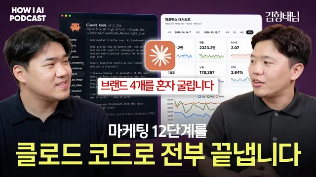

"만들었는데 안 팔린다"는 빌더들에게. 클로드 코드로 마케팅까지 끝내는 12단계 (김형태 대표, 데일리그로스)

원본 영상 보기 →
- 만드는 비용이 내려가면 파는 능력이 차이를 만들어요
- AI는 분석 시간을 크게 줄여 주지만 끄는 결정은 위험할 수 있어요
- 안드로메다 이후엔 타게팅보다 앵글이 경쟁력이에요
한 줄 요약
15년 차 퍼포먼스 마케터 김형태 대표(데일리그로스)가 클로드 코드로 브랜드 분석부터 광고 소재 제작, 성과 분석까지 12단계 폴더로 나눠 굴리는 실제 작업 환경을 보여 줘요. 반복 업무는 AI에게 넘기되 어떤 소재를 끄고 어떤 방향으로 갈지는 여전히 사람이 결정해야 한다는 게 김형태 대표의 결론이에요.
전체 내용 정리
만드는 건 쉬워졌는데 이제는 '어떻게 팔지'에서 막혀요
이번 영상은 조쉬가 데일리그로스의 김형태 대표를 초대해 나눈 대화예요. 김형태 대표는 스스로를 15년 차 마케터라고 소개합니다. 광고대행사에서 5년 정도 국내 주요 브랜드의 콘텐츠 마케팅을 맡았고 그 뒤 SK 그룹을 포함한 인하우스에서 퍼포먼스 마케터로 9년 정도 일했어요. 지금은 독립해서 직원 없이 혼자 브랜드의 퍼포먼스 마케팅 대행과 컨설팅, 교육을 하고 있죠. 주로 다루는 매체는 메타 광고이고 클라이언트 상황에 따라 네이버·틱톡·구글 광고도 함께 돌립니다.
조쉬는 김형태 대표의 링크드인 게시물을 꾸준히 봐 왔고 최근 AI 마케팅 서밋 발표도 인상 깊게 봤다고 해요. 김형태 대표는 클로드 코드를 마케팅에 활용하는 방법을 강의로도 내놓았어요. 대행사 시절에는 광고 기획자 서너 명이 한 파트에서 브랜드 서너 개를 맡았는데 지금은 혼자서 동시에 세네 개 브랜드를 운영하고 있죠.
조쉬가 김형태 대표를 부른 배경도 흥미로워요. 김형태 대표의 강의를 듣는 사람 중에는 마케터보다 개발자나 창업자가 더 많았다고 해요. 이들은 대부분 파는 걸 어려워하거든요. 김형태 대표는 만드는 일이 쉬워진 만큼 출시한 뒤 어떻게 팔지 고민하는 빌더가 늘었고 그래서 마케팅이 더 중요해진 시대가 됐다고 봅니다.
빌더들이 가장 자주 놓치는 건 고객 관점이에요. 제품을 만들고 나면 애착이 생겨서 이 제품이 얼마나 좋은지 알리는 데 집중하게 되는데요. 고객이 궁금한 건 제품이 좋은지보다 내 문제를 어떻게 해결해 주는지예요. 김형태 대표는 마케팅의 구루로 불리는 시어도어 레빗(Theodore Levitt)의 말을 빌려 옵니다. 고객이 원하는 건 0.25인치 드릴이 아니라 0.25인치 구멍이라는 이야기죠.
드릴 성능보다 구멍이 뚫리고 나면 뭘 쉽게 할 수 있는지를 보여 줘야 한다는 거예요.
광고 소재를 만들 때도 마찬가지예요. 선크림이라면 SPF 수치를 내세우기보다 "선크림 바르면 여드름 난다" 같은 고객의 고민에서 시작해 보라고 권해요. 우리 제품은 이런 이유로 여드름이 안 난다고 말하는 식이죠. 실제로 고객 이야기보다 제품 이야기가 많은 광고 소재는 평가가 안 좋은 경우가 많았다고 합니다.
메타가 공식 MCP를 열면서 분석은 오히려 쉬워졌어요
김형태 대표도 예전에는 동시에 세네 개 브랜드를 운영하려면 몸을 갈아 넣어야 했어요. 매일 아침 광고 실적을 받아 구글 시트에 업데이트하고 데이터를 분석하고 광고 소재를 기획·제작하는 일이 시간을 가장 많이 잡아먹었거든요. 클로드 코드를 쓰면서 이런 일이 빨라졌고 그렇게 생긴 시간에 여러 클라이언트를 맡으면서 교육까지 하고 있다고 해요. 조쉬도 클로드 코드가 코딩 에이전트로 알려져 있지만 마케팅 업계에 미치는 파급력이 엄청나다고 느꼈다고 말합니다. 김형태 대표는 여기에 동의하면서도 클로드 코드 같은 코딩 에이전트가 나온 지 그리 오래되지 않았으니 이제 시작하는 단계라고 봐요.
변화의 계기 중 하나는 메타가 4월쯤 공식 MCP(AI가 외부 서비스에 접근하도록 연결해 주는 표준 방식)를 연 거예요. 그 전에도 API를 연동해 광고 실적을 자동으로 받아 보긴 했어요. 다만 API로 뭔가를 하면 메타가 페널티를 주지 않을까 늘 불안했거든요. 김형태 대표는 공식으로 열어 줬다는 건 메타가 이런 방식을 인정하고 마케터에게도 그렇게 바뀌라고 말하는 신호라고 해석합니다. 소재 제작도 AI 툴을 연결해 훨씬 쉽게 만들 수 있게 됐고요. 그래도 이런 기술을 활용하는 쪽은 아직 갈 길이 멀다고 덧붙여요.
조쉬는 직접 광고를 집행해 보니 소재를 만들고 올리는 데까지는 빨라졌지만 그다음 성과 측정을 어떻게 할지 막막했다고 털어놓아요. 김형태 대표의 답은 반대였어요. 예산이 크면 소재도 캠페인도 많아져서 집행 뒤 분석에 공수가 많이 드는데 이제는 광고 대시보드를 만들거나 메타 MCP·API를 연결해 현재 상황을 팩트로 정리하고 리포트를 받기가 쉬워졌다는 거죠. 분석은 오히려 AI 덕을 크게 보는 영역이라는 이야기예요.
다만 AI가 내놓는 판단은 아직 정확하지 않을 때가 있어요. 요즘 메타는 어드밴티지+ 캠페인처럼 여러 소재를 한 캠페인 안에 몰아 세팅하게 하는데요. 판매 캠페인이라면 메타는 구매를 많이 일으키라는 요청을 받고 머신러닝으로 여러 소재를 테스트한 뒤 성과가 좋은 소재에 예산을 몰아줍니다. 이때 목표한 구매 효율이 안 나왔다고 AI가 그 소재를 끄라고 분석해 줄 수 있어요. 그런데 그 소재를 끄면 머신러닝 전체가 학습을 다시 해야 할 수도 있거든요.
그래서 김형태 대표는 팩트 분석은 쉬워졌어도 무엇을 끄고 어떤 소재를 새로 만들지 결정하는 일은 마케터의 더 중요한 역할이 됐다고 봐요. 조쉬가 매일 아침 9시에 소재를 하나 만들고 전날 광고를 분석해 효율 낮은 광고를 자동으로 끄는 크론잡(정해진 시간에 자동으로 실행되는 작업)을 걸어 두면 완전 자율 마케팅이 되지 않겠냐고 묻자 김형태 대표는 아직 멀었다고 답합니다. 그게 됐다면 이미 사례가 많이 나왔을 텐데 아직 그런 사례를 잘 보지 못했다고 해요.
마케팅 전 과정을 12개 폴더로 나눠 뒀어요
여기서부터 김형태 대표가 실제로 쓰는 클로드 코드 프로젝트 폴더를 보여 줘요. 예시 브랜드는 조쉬가 운영하는 AI 웹디자인 빌더 SaaS예요. 폴더는 번호가 붙은 12개로 나뉘어 있어요. 1번부터 4번까지는 전략 기획, 5번부터 8번까지는 콘텐츠, 그 뒤 12번까지는 퍼포먼스 집행부터 데이터 분석을 맡는 구조예요.
전략 기획은 마케팅의 전통적인 프레임워크인 3C 분석(회사·경쟁사·고객)에서 출발해요. 01번 회사 분석에는 브랜드의 톤, 자주 쓰는 컬러, USP(고유한 강점) 같은 브랜드 맥락을 최대한 많이 넣고 제품 로고와 이미지도 같이 넣어 둡니다. 클로드 코드 같은 코딩 에이전트가 유용한 건 내 맥락을 잘 읽기 때문이에요. 광고 소재 제작까지 한 프로젝트 폴더 안에서 하니까 제품을 읽어 와야 그대로 만들거나 분석할 수 있거든요.
그다음은 경쟁사 분석이에요. 경쟁사가 어떤 소구 포인트로 메시지를 내보내는지, 광고와 상세 페이지를 어떻게 꾸렸는지 분석해 인사이트를 뽑게 해요. 세 번째는 고객 분석으로 고객이 가진 페인포인트를 정리하게 시킵니다. 자료가 하나도 없으면 어떻게 하냐는 조쉬의 질문에 김형태 대표는 내 브랜드 자료는 어느 정도 있어야 하고 나머지는 클로드가 찾아서 작성할 수 있다고 답해요. 이 구성은 마케터나 대표가 쓰도록 만든 거라 경쟁 브랜드처럼 본인이 더 잘 아는 정보는 직접 입력할 수 있게 해 뒀다고 해요.
사이트 URL을 넣고 분석 스킬을 불러오면 클로드가 브랜드 브리프를 정리해 줘요. 브랜드 한 줄 정의, 광고의 핵심 소구 포인트가 될 USP, 텍스트 톤, 자주 쓰는 컬러와 쓰지 말아야 할 컬러가 들어가요. 판매 페이지라면 판매 내용까지 분석하고 믿을 수 있는 이유가 될 사회적 증거와 메인 카피도 정리합니다. 예시 서비스에서는 템플릿이 많다, 한국형 디자인에 최적화됐다, AI 에이전트와 연동된다 같은 점이 USP로 꼽혔어요. 이 브리프는 나중에 이미지·영상 소재나 랜딩 페이지를 만들 때 계속 참고 자료로 쓰여요.
조쉬가 마음만 먹으면 1번부터 12번까지 루프로 쭉 돌릴 수도 있겠다고 하자 김형태 대표는 중간에 넣어야 할 게 많다고 답해요. 이미지 생성 툴이나 구글 애널리틱스, 메타 MCP 같은 연동이 다 돼 있으면 알아서 돌아가긴 하겠죠. 그래도 04번 폴더(광고에 내보낼 카피)와 12번 폴더(집행 뒤 최적화)는 마케터나 대표가 직접 판단하는 편이 훨씬 낫다고 봅니다.
줄일 수 있는 업무는 줄이되 판단이 들어가는 개선 작업은 사람이 맡자는 거예요.
안드로메다 업데이트 이후엔 앵글을 넓혀야 해요
브리프에서 한 단계 더 들어가면 광고 소재용 메시지 브리프가 나와요. 여기에는 컨셉, 메시지 후보, 스토리보드가 담기는데요. 예시에서는 분석 결과가 제안한 후보 중에서 김형태 대표가 'AI 슬롭(AI가 만든 티가 나는 결과물) 탈출'을 메인 카피로 골랐어요. 스토리보드에는 고객의 페인포인트, 그에 대한 솔루션, 그걸 크리에이티브로 어떻게 표현할지, 그리고 지금 당장 해야 하는 이유가 들어가요. 이 네 가지가 들어간 소재가 효율이 좋았기 때문에 아예 프레임워크로 만들어 뒀다고 해요.
앵글을 여러 개로 나눈 배경에는 메타의 안드로메다 업데이트가 있어요. 예전 마케터들은 2030, 강남 거주자처럼 타게팅을 잘게 쪼갰어요. 지금은 광고 소재를 여러 개 올려 두면 메타의 AI가 알아서 그 광고가 필요한 사람을 찾아가요. 그래서 소재를 많이 만들라고들 하는데 카피만 살짝 바꾼 건 메타가 같은 소재로 판단해요. AI 슬롭이 고민인 사람과 저렴하게 디자인을 뽑고 싶은 사람처럼 니즈가 다른 고객별로 앵글을 달리해야 한다는 거죠.
조쉬가 한 니즈로 카피를 여러 개 테스트하는 대신 왜 앵글부터 넓혔냐고 묻자 김형태 대표는 두 가지를 들어요. 하나는 메타가 안드로메다 업데이트 뒤 교육과 세미나에서 앵글과 유형을 다양하게 테스트하라고 거듭 안내한다는 점이에요. 다른 하나는 실무 경험이에요. 뷰티 브랜드라면 특정 페인포인트를 가진 타깃이 한정돼 있어서 예산을 늘리거나 규모를 키우려면 더 다양한 내용이 필요하거든요. 처음엔 넓게 보고 잘되는 몇 개 앵글로 좁힌 뒤 카피 테스트를 늘리는 순서예요.
광고 소재의 수명은 어떨까요. 김형태 대표가 독립 뒤 13~14개 브랜드를 맡아 보니 주기는 정말 제각각이었어요. 어떤 광고주는 2년 이상 유지되는 위닝 소재를 갖고 있었는데 화려한 소재보다는 브랜드 고유의 메시지를 담백하게 전한 에버그린 소재였다고 해요. 하지만 대부분은 주기가 짧아서 예산을 크게 쓰는 곳은 매월이나 매주 새 소재를 발굴하고 그중 오래가는 게 몇 개월 버티는 정도예요. 조쉬는 위닝 소재를 얼마나 더 집행할지, 새 소재를 언제 찾을지 같은 반복 판단에 아직 사람이 적극적으로 개입해야 한다는 점을 여기서 이해했다고 정리해요.
이미지는 AI로 만들고 영상은 후킹·강점·CTA 순서로 이어 붙여요
메시지가 확정되면 이미지 소재를 만들어요. 예시 서비스의 메인 소재는 AI 슬롭에서 벗어나라는 메시지를 담았고 여기에 다른 앵글이 더해졌어요. 사회적 증거 앵글에서는 AI가 조쉬가 실제로 했던 말을 리서치해서 광고 문구로 가져왔어요. 선택지를 줄여 준다는 앵글이나 터미널로 바로 이어진다는 앵글도 있었고요. 조쉬가 가상의 클라이언트로서 메시지를 승인하면 어떻게 되냐고 묻자 김형태 대표는 광고주라면 이 중 몇 개를 추려 제안받고 고르게 된다고 답해요. 신뢰하는 광고주라면 한번 직접 해 보라며 통째로 맡기기도 하고요. 조쉬는 사회적 증거 앵글 소재에 자기가 실제로 했던 워딩이 그대로 들어간 걸 보고 재밌어했어요.
이미지를 만드는 스킬은 처음엔 나노바나나 API를 연동해 만들었어요. 지금은 이미지·영상 생성 플랫폼을 연동해 GPT 이미지 2.0으로 만들고 있다고 해요. 영상은 컷 하나를 만들어 쓰기도 하고 짧고 감각적인 영상이 나오면 그대로 쓰기도 하고 여러 개를 이어 붙이기도 해요. 다만 아직은 이미지보다 영상의 활용도가 낮다고 봐요.
예시 영상의 흐름은 이래요. 첫 컷에서 이 디자인은 딱 봐도 AI 같다고 찌르고 디자인 시스템 여러 개로 시작하라고 강점을 보여 준 뒤 마지막에 무료 30 크레딧으로 만들어 보라는 CTA(행동 유도 문구)로 끝나요. 생성 플랫폼이 만든 시드 이미지를 하나씩 영상으로 바꿔 이어 붙이면 브랜드 전환용 숏폼 광고가 완성돼요. 손볼 데가 많긴 하다고 김형태 대표도 인정하지만 이렇게 만든 영상을 실제로 쓰는 브랜드도 일부 있다고 해요.
컷을 나눈 이유도 고객 관점에서 나와요. 첫 부분은 고객의 페인포인트를 담은 후킹, 그다음은 브랜드의 강점이고 마지막은 지금 바로 해야 하는 이유를 담은 CTA예요. 이 순서로 만들었을 때 성과가 좋았던 경우가 많았대요. 조쉬는 이게 릴스의 후킹·본문·CTA 프레임워크와 같다고 짚어요. 이렇게 스토리라인을 짜기도 하고 이미지 소재에 애니메이션만 살짝 넣어 짧게 쓰기도 해요.
분석은 자동으로 돌리고 결정은 사람이 해요
집행 뒤에는 분석과 최적화가 이어져요. 김형태 대표는 인프런에 올린 강의 방식 그대로 실제 운영을 하고 있어요. 맡은 브랜드마다 폴더가 있고 메타 광고에 MCP나 API를 연결해 불러온 데이터로 대시보드를 만들어 뒀어요. 매일 아침 로우 데이터를 직접 올릴 필요 없이 자동으로 연동되는 구조예요. MCP가 나오기 전에는 메타 개발자 쪽에서 앱을 만들고 API 토큰을 받아 읽기 권한으로 데이터를 가져왔는데 그 복잡한 과정을 지금은 MCP가 대신한다고 해요.
리포트는 일주일에 한 번 만들어요. 데이터는 주식 보듯 매일, 실시간으로 보지만 머신러닝 기반이라 단기적으로 자주 조정하면 오히려 실적을 해칠 수 있거든요. 그래서 브랜드의 마케터나 MD 같은 광고 담당자와 일주일에 한 번 전체 현황을 점검하면서 캠페인·광고 세트·광고 중 무엇을 바꿀지 논의해요. 화면에 띄운 예시는 가상 데이터였지만 소재별 현황까지 한눈에 볼 수 있게 정리돼 있었어요. 리포트는 기존 주간·월간 보고 형식을 써서 캠페인 현황, KPI 달성률, 소재, 랜딩 페이지를 한 번에 리뷰하게 돼 있어요.
논의는 세세한 지표로 들어가요. CPM(노출 비용)부터 클릭률, 전환율, 장바구니 담기, 재구매율까지 보는 광고주도 많아요. 예를 들어 CVR(전환율)이 문제라면 랜딩 페이지를 어떻게 바꿀지까지 함께 정하는 식이죠. 클라이언트가 전부 맡긴 경우에는 이런 논의 없이 김형태 대표가 직접 집행합니다.
조쉬는 이 판단까지 꼭 사람이 계속해야 하냐고 다시 물어요. 김형태 대표는 경제적으로 봤을 때 에이전틱하게 운영해서 성과가 잘 나오면 이런 작업은 필요 없어질 수도 있다고 답해요. 대신 그때부터는 크리에이티브 싸움이 된다고 봐요. 전략 방향을 정하는 건 여전히 사람이고 안드로메다 이후 메타도 소재가 중요하다고 강조하는 만큼 고객이 반응하는 소재를 만드는 데 더 집중해야 한다는 거예요.
김형태 대표가 최근 AI 마케팅 서밋에서 발표한 주제도 같은 맥락이에요.
"AI는 실행하고 마케터는 결정한다"
광고 실적 업로드나 분석 같은 단순 반복 업무는 사라지고 소재 제작도 도움을 받을 수 있으니 마케터는 전략과 창의 같은 한 단계 위의 일을 더 많이 하게 될 거라고 내다봐요. 그 역량을 어떻게 키우냐는 질문에는 마케팅의 기초 원리부터 배우라고 답합니다. 마케팅 원론이나 고객에게 접근하는 방법은 변하지 않는다는 거죠. 15년 차라고 마케팅을 더 잘하는 것도 아니고 해외에는 기초를 빠르게 실행하면서 마케팅을 키우는 젊은 사람이 많다고 덧붙여요.
조쉬도 마케팅에 어떻게 접근할지 모르는 빌더와 개발자에게 인프런에서 마케팅 원론 강의부터 들어 보라고 권한다고 말해요. 시간을 아끼고 싶다면 김형태 대표의 강의를 들어 보라는 농담 섞인 추천도 덧붙이고요. 김형태 대표의 앞으로 계획은 콘텐츠를 많이 만드는 거예요. 콘텐츠를 장기적으로 만든 사람들이 잘된 경우가 많았다고 해요. 클로드 코드를 포함한 AI로 마케팅을 잘하는 방법을 사업 모델로 삼고 싶은데 외부 채널에 광고만 해서는 한계가 있다고 봤거든요. 24년부터 생각만 하고 실행하지 못했는데 이제는 해 보고 싶다고 합니다. 조쉬는 유튜버로서의 출발을 응원한다며 대화를 마무리해요.
조쉬는 이번 사례로 클로드 코드 같은 AI 코딩 도구가 코딩뿐 아니라 마케팅과 기획 영역까지 들어오고 있다는 걸 느낄 수 있었을 거라고 정리합니다.
핵심 인사이트
- 만드는 비용이 내려가면 파는 능력이 차이를 만들어요: 개발자와 창업자가 마케팅 강의로 몰린 건 출시 뒤 어떻게 팔지가 새 병목이 됐기 때문이에요. 이때 출발점은 제품 자랑보다 고객의 문제여야 해요.
- AI는 분석 시간을 크게 줄여 주지만 끄는 결정은 위험할 수 있어요: 메타 MCP·API로 팩트 정리는 쉬워졌어요. 그런데 머신러닝이 예산을 몰아주는 구조에서 AI 말대로 소재를 끄면 학습이 다시 시작될 수 있어서 결정은 사람이 해야 해요.
- 안드로메다 이후엔 타게팅보다 앵글이 경쟁력이에요: 메타 AI가 사람을 찾아 주니 마케터의 일은 니즈별로 다른 앵글의 소재를 공급하는 쪽으로 바뀌었어요. 카피만 바꾼 변형은 같은 소재로 취급돼요.
- 맥락을 폴더에 쌓아 두면 매번 처음부터 설명하지 않아도 돼요: 브랜드 톤·컬러·USP·로고를 01번 폴더에 넣어 두니 이미지·영상·랜딩 페이지 제작이 같은 브리프를 바탕으로 이어져요.
오늘 당장 해볼 것
- 클로드 코드 프로젝트 폴더를 만들고 01번 폴더에 내 브랜드 자료(사이트 URL, 로고, 제품 이미지)를 넣은 뒤 브랜드 브리프를 정리해 달라고 시켜 보세요. 한 줄 정의·USP·톤·쓰지 말아야 할 컬러까지 뽑아 보면 AI가 내 브랜드를 어떻게 읽는지 보입니다.
- 지금 쓰는 광고 문구를 고객 관점으로 다시 써 보세요. 스펙 수치 대신 고객이 실제로 하는 고민 한 문장으로 시작하면 소재가 얼마나 달라지는지 바로 비교할 수 있어요.
- 고객 니즈를 서로 다른 세 가지 앵글로 나누고 앵글마다 페인포인트, 솔루션, 표현 방식, 지금 해야 하는 이유 순서로 스토리보드를 짜 보세요. 카피만 바꾼 변형보다 앵글이 다른 소재를 테스트하는 쪽이 안드로메다 이후 메타가 권하는 방향이에요.
- 메타 광고를 돌리고 있다면 메타 공식 MCP를 연결해 지난주 캠페인 현황을 팩트로 정리해 달라고 요청해 보세요. 소재를 끄라는 제안이 나오면 바로 따르기보다 머신러닝 학습에 미칠 영향을 먼저 따져 보는 게 좋아요.